就労支援事業所のための学習・実践プログラム
学びと仕事を、事業所に。
エスピクトスクールは、就労支援事業所にデジタルの学習環境と実際の仕事を届けるサービスです。
「導入について相談する」は、Mjupの公式お問い合わせ窓口へ進みます
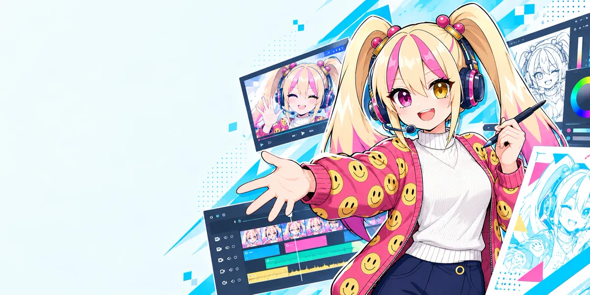
できること
学ぶ環境と、取り組める仕事を。
利用者の方の興味に合わせて、できる作業から。教材・授業・AIで学び、練習を重ねて、学びの先に実際の仕事を。
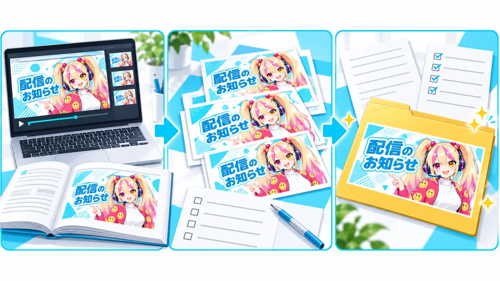
-
学ぶ
教材・平日毎日のライブ授業・AIで
- 教材で、基礎から次に挑戦したいテーマまで
- 平日毎日のライブ授業で、講師の実演を見ながら質問
- 見逃した授業は、アーカイブで確認
- 操作の疑問は、24時間エスピクトAI「ぴくと」へ
-
練習する
実践課題と模擬訓練で
- 専用アプリの「実践課題」に取り組み、「提出」から出す
- 案件ごとの取り組み方を、解説動画で確かめる
- 過去案件を使った模擬訓練に、繰り返し取り組める
-
本番の案件に取り組む
条件を確かめてから受ける
- 担当範囲・納期・報酬・変更時の連絡方法を、事業所と確認してから受注
- 案件の案内から品質確認・納品まで、エスピクトスクールが支える
取り組める仕事の分野
制作・発信・運営を支える仕事があります。どの分野も、取り組みやすい「はじめの一歩」から。
-
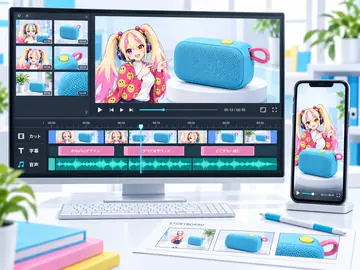
動画編集
YouTube動画、企業・商品の紹介動画、ショート動画。
はじめの一歩不要な場面のカットや、字幕の入力から。
-
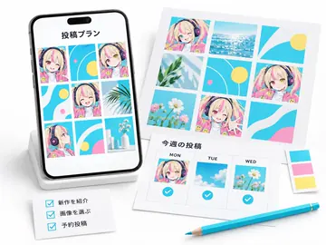
SNS運用・投稿制作
お店や企業の発信を、企画から投稿まで。
はじめの一歩投稿画像の文字替えや、文章の下書きから。
-
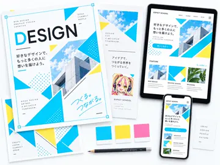
画像デザイン・Web制作
ロゴやサムネイルから、チラシ、Webページまで。
はじめの一歩テンプレートの文字や写真の差し替えから。
-
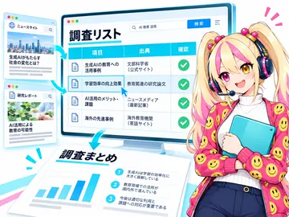
AI活用・情報整理
企業・商品のリサーチ、比較表、文章やデータの整理。
はじめの一歩指定された情報を調べ、リストにまとめることから。
-
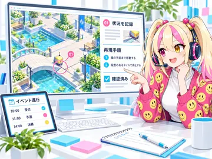
ゲーム・イベント関連
不具合の確認と報告、大会の準備や進行の補助。
はじめの一歩決められた手順で動作を確かめ、結果を記録することから。
-
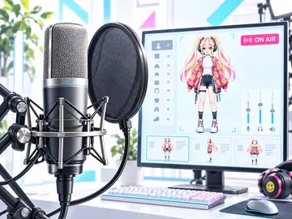
イラスト・配信サポート
キャラクターやアイコン、配信画面の素材、2Dキャラクターの制作補助。
はじめの一歩線画の色塗りや、素材の切り出しから。
-
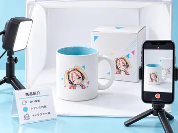
商品PR・ライブコマース
商品撮影、紹介動画、配信台本・進行の補助。
はじめの一歩商品情報の整理や、写真の明るさ調整から。
-
案件の内容・募集状況・参加条件は、個別にご案内します。
相談の流れを見る
画像は仕事内容を伝えるための制作イメージです。登場する商品・イベントは架空の題材で、実績や販売品ではありません。
職員の方の関わり
専門的な指導を、職員の方だけで抱えない。
専門的な操作は、教材と講師の実演で。職員の方がすべてを教える前提にせず、日々の声かけや活動ペースの確認に目を向けられます。
たとえば、こんなとき
-
こんなとき動画編集を続けたいのに、教えられる方が退職してしまった
エスピクトスクールでは
教える土台は、教材・授業・AIに。
教材で学び、実演で確かめ、疑問はAIへ。教える役割が、一人に偏らない学び方を用意します。
-
こんなとき同じ操作の質問が重なり、職員の方の手が止まる
エスピクトスクールでは
自分で確かめる入口を、AIにも。
操作の疑問や文章の下書きは、エスピクトAIへ。職員の方に聞く以外にも、自分で確かめながら進める選択肢を用意します。
-
こんなとき一人ひとりで進み方が違い、一斉には教えにくい
エスピクトスクールでは
教材とアーカイブで、それぞれのペースへ。
はじめての操作は教材で、忘れた手順はアーカイブで。全員が同じ速さで進む必要はありません。
-
こんなときデジタルの仕事を始めたいが、受注先を探すことも、初心者への指導や納品の判断も、事業所だけでは難しい
エスピクトスクールでは
受注先探しから納品まで、事業所だけで抱えない。
教材で学びながら、担当できる作業へ。提供案件は、品質確認・納品まで支えます。
-
こんなとき在宅利用の相談を、受け入れられなかった
エスピクトスクールでは
自宅にも、取り組める環境を。
教材やAIを自宅から利用。取り組みを記録し、何を進めたかを確かめられます。
在宅利用には、自治体の判断や事業所の支援体制などの要件があります。
上の例は活用のしかたを説明するためのもので、実在の事業所の声や成果ではありません。
それぞれが担うこと
エスピクトスクールが担うこと
- 教材・平日毎日のライブ授業・アーカイブ
- エスピクトAI「ぴくと」（24時間）
- 取り組みを記録する専用アプリ
- 案件の斡旋・提供と、条件の共有
- 品質の確認と、依頼元への納品管理
事業所（職員の方）にお願いすること
- 日々の声かけ
- 体調や活動ペースの確認
- 福祉サービスとしての支援・記録
- 案件を受ける前の、条件の確認（担当範囲・納期・報酬・変更時の連絡方法）
利用者の方が取り組むこと
- 教材・授業で学ぶ
- 実践課題や模擬訓練で練習する
- 担当する作業に取り組み、提出する
体調や福祉支援の相談は、アプリやAIではなく事業所へ。福祉サービスとしての支援が、アプリだけで完結するものではありません。
案件の進め方
仕事が届いてから、納品まで。
案件の案内から品質確認・納品まで、エスピクトスクールが支えます。仕事を依頼する企業とは、目的や納品条件を共有し、案件に応じて確認します。
- エスピクトスクールが案内 案件・条件の共有
- 利用者の方が取り組む 作業・提出
- エスピクト・企業側で確認 品質の確認
- エスピクトスクールが納品管理 依頼元へ納品
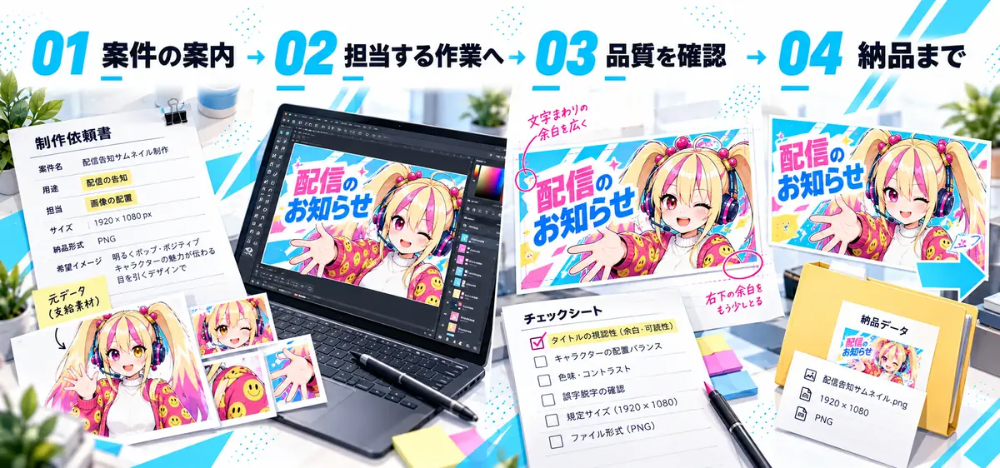
受注は、条件を確認してから
担当範囲・納期・報酬・変更時の連絡方法を、事業所と確認します。作業内容・数量・期間を確認し、事業所の体制に合う案件をご案内します。
担当できる範囲は、本人の状況と案件の条件に合わせて確認します。
斡旋・提供している案件の金額帯
5万〜60万円
動画編集・画像制作・Web制作など
案件の金額であり、利用者個人の工賃やサービス利用料金ではありません。発注条件は個別にご案内し、一定の仕事量や収益を保証するものではありません。
案件の内容・報酬・参加条件は個別に確認します。一定の仕事量や収益を保証するものではありません。
エスピクトスクール専用アプリ
学ぶ、聞く、取り組む。毎日の入口を、ひとつに。
利用者の方には、自分のペースで学び進める環境を。職員の方には、日々の取り組みを確かめられる環境を。下の画面は、すべて実際のアプリ画面です。
今日の取り組み（ホーム）
その日の授業LIVEの案内と、「授業LIVE」「アーカイブ」「教材」「実践課題」「提出」「ぴくとに相談」の入口が、ひとつの画面にまとまっています。
授業LIVEは、参加後に取り組み時間や視聴完了を記録できます。

教材ライブラリ
ジャンルとレベルごとに教材が並び、タイトルやカテゴリで探せます。「未完了」「完了」での絞り込みもできます。
画面は「動画編集／基礎編」の例です。
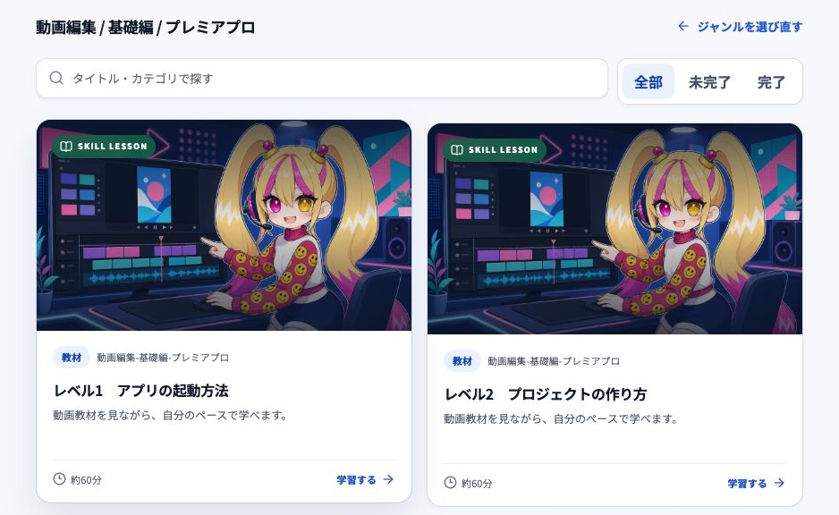
エスピクトAI「ぴくと」に相談
操作方法や授業・課題で困っていることを送ると、ぴくとが次の一歩を案内します。操作の質問、文章の下書き、見直しのヒントに。回答は、内容を確かめて活用します。
個人情報や、体調・障害・家族に関する相談は入力せず、事業所の職員の方へ直接伝えるよう、画面でも案内しています。
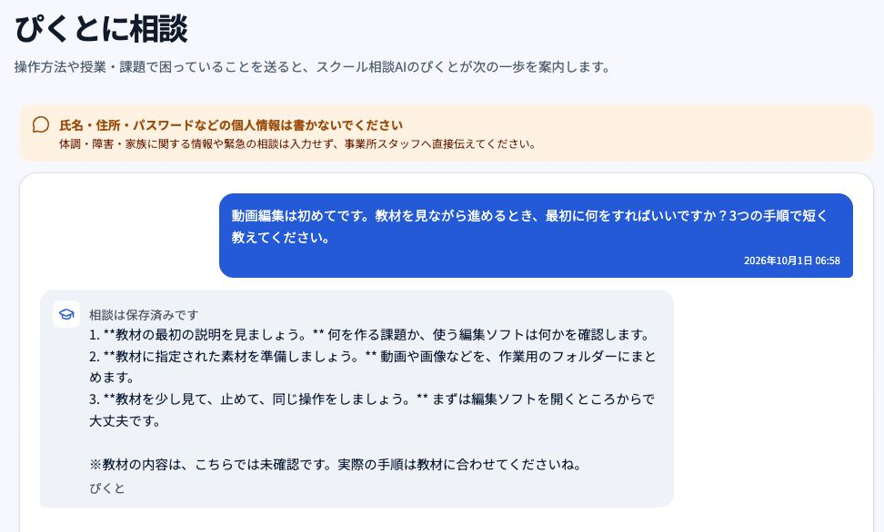
取り組み記録
授業、教材、実践課題に取り組んだ時間と提出を、日ごとに確認できます。月ごとに、取り組み時間・取り組んだ日・提出・視聴確認がまとまります。
職員の方が記録をどう確かめるかは、サービス体験で実際にお試しいただけます。
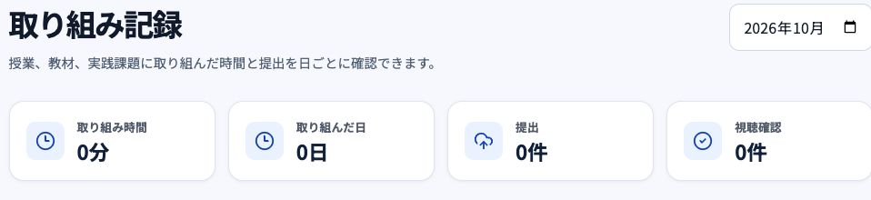
記録は日々の振り返りの材料です。福祉サービスとしての支援・記録は事業所で行います。
はじめ方
体験して、確かめて、導入へ。
利用者の方に合うか、日々の活動に取り入れられるか。実際の使い方と条件を確認してから、導入を検討できます。
-
ご相談
今の活動と、ご希望を共有
利用者の方の興味、現在の活動、PC環境や職員体制を伺います。まだ分野が決まっていなくても、ご相談いただけます。
-
サービス体験
教材・AI・記録を実際に体験
教材・AIに加え、出席や取り組みの記録・確認まで体験。利用者の方がどう進め、職員の方がどう関わるかを確かめ、ライブ授業への参加方法もご案内します。
-
条件の確認
利用内容と条件を確認
利用条件・費用・必要な設備をご案内します。事業所の活動や体制に合うか、導入前に一緒に確認します。
-
利用開始
PCの準備から、利用開始まで
今あるPC・ソフト・通信環境を確認し、必要に応じてPCのレンタル・販売もご相談いただけます。アカウントと初期操作を確かめ、日々の活動へ。
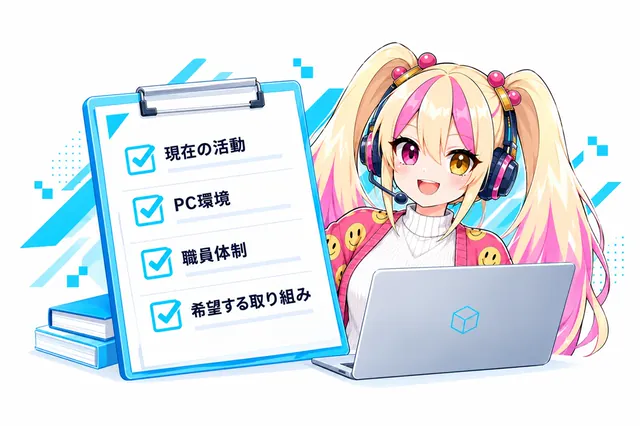
まずは、ご相談から
ご相談では、利用者の方の興味、現在の活動、PC環境や職員体制を伺います。まだ分野が決まっていなくても、ご相談いただけます。
「体験について相談する」は、Mjupの公式お問い合わせ窓口へ進みます
Q&A
よくあるご質問
職員の方に専門的な知識がなくても導入できますか？
職員の方だけで、専門的な指導を抱える必要はありません。
教材に加え、平日毎日のライブ授業・質問対応とアーカイブを活用できます。操作や課題の疑問は24時間使えるエスピクトAIでも確認できます。日々の声かけ、体調や活動ペースの確認は事業所にお願いします。
未経験の方でも取り組めますか？
基礎教材から、取り組みやすい内容を選べます。
全員が同じ作業をする前提ではありません。興味や経験に合わせて学び、実案件では必要なスキルと担当できる範囲を案件ごとに確認します。
どのようなパソコンや設備が必要ですか？
取り組む分野に合わせて、今のPC環境から確認します。
動画編集・デザイン・調査など、内容によって必要な環境は異なります。現在の設備を伺い、必要なソフトや通信環境をご案内します。PCのレンタル・販売もご相談いただけます。
費用や利用条件は、どこで確認できますか？
導入前に、利用条件・費用・必要な設備をご案内します。
はじめ方の「03 条件の確認」で、事業所の活動や体制に合うかを一緒に確認します。
在宅利用にも活用できますか？
在宅での学習やデジタルの作業にも活用できます。
教材・ライブ配信・AIを、事業所の支援と組み合わせて利用します。在宅利用の可否は自治体の判断や事業所の支援体制によります。福祉サービスとしての支援がアプリだけで完結するものではありません。
エスピクトAI「ぴくと」には、何を相談できますか？
操作の質問、文章の下書き、見直しのヒントなどです。
回答は内容を確かめて活用してください。体調や福祉支援の相談は、AIではなく事業所へ。アプリの画面でも、個人情報や体調・障害・家族に関する相談は入力しないよう案内しています。
欠席や体調の変化で、案件が進まないときは？
変更が分かった時点で、案件の担当窓口へ共有します。
受注前に作業量・分担・確認日・連絡先を整理し、変更時の対応を相談します。代行や納期延長の可否は案件によって異なります。
地域に、新しい選択肢を。
「ここで学びたい」そう思える場所を、この地域に。
教えてくれる人と、挑戦できる環境を。事業所の新しい魅力を、一緒につくります。
「まずは、導入のご相談から」は、Mjupの公式お問い合わせ窓口へ進みます
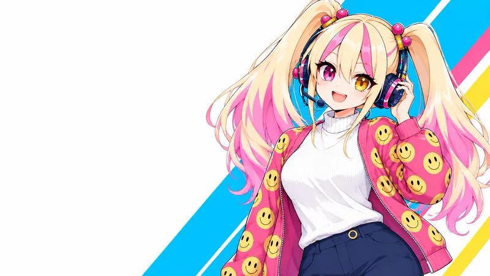